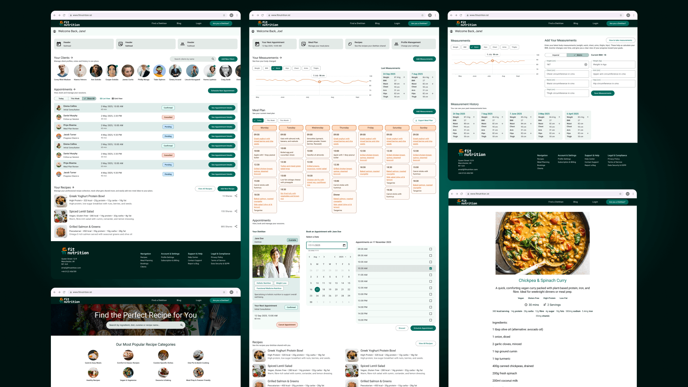
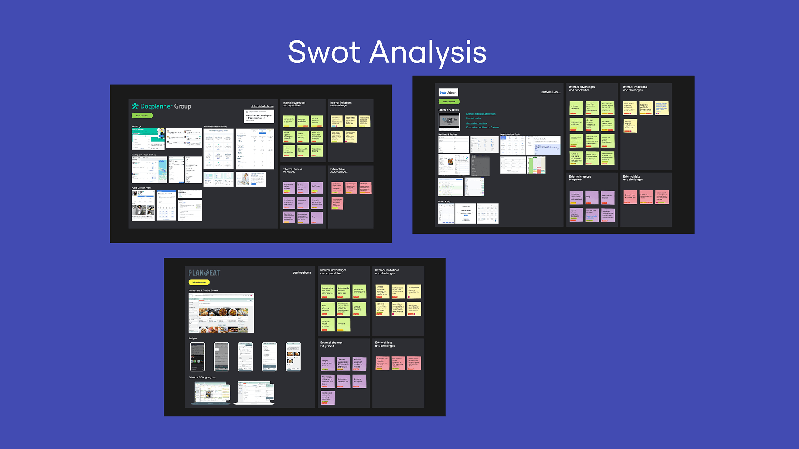
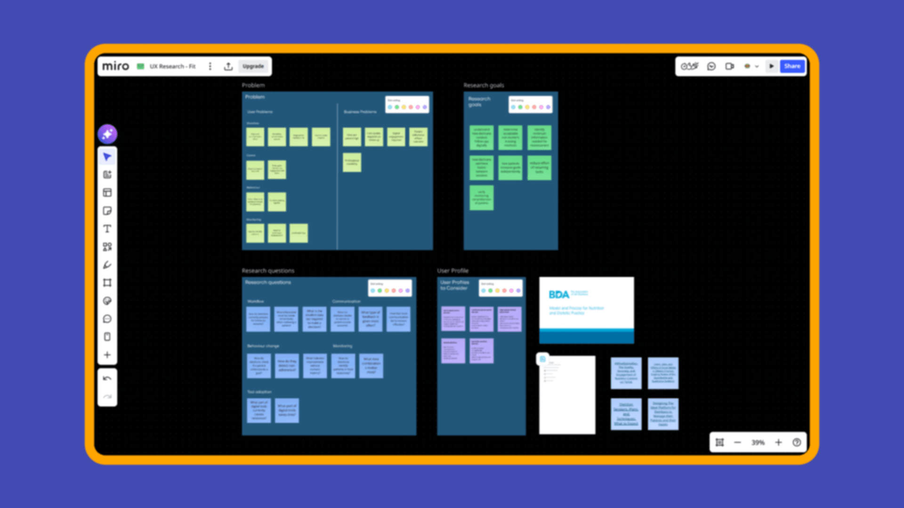
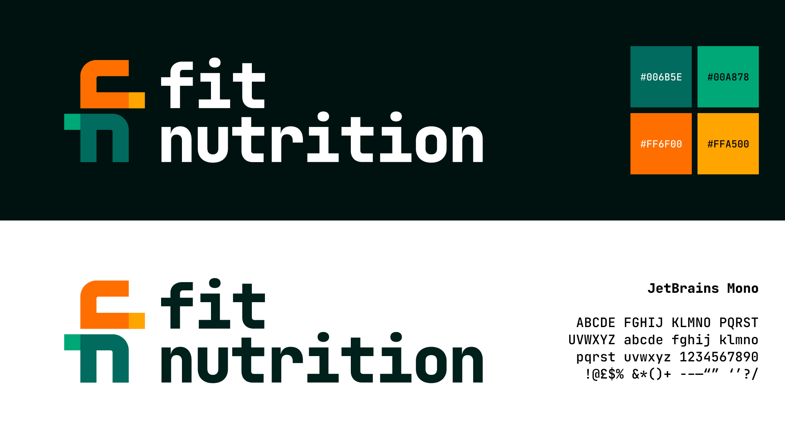
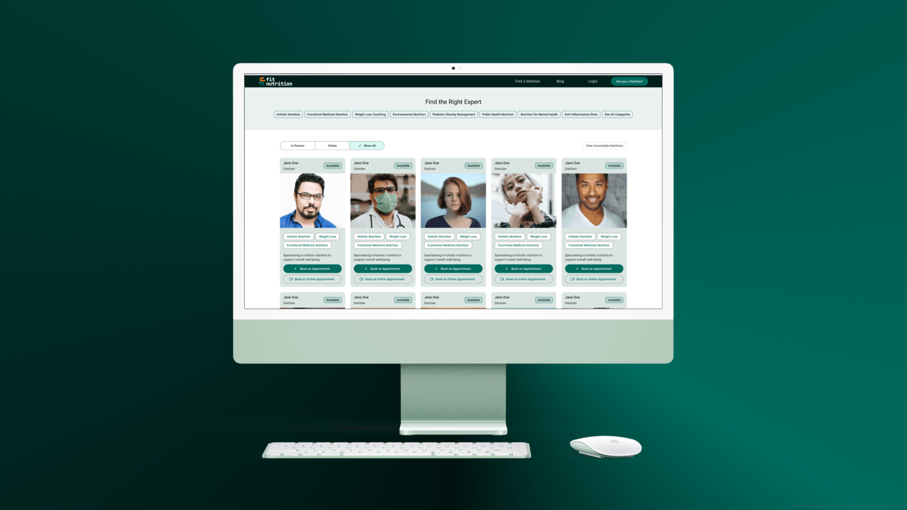

Fitnutrition
Project Information
- Category:UX Research, Competitive Analysis, UX Design, UI Design, Design Systems, Branding
- Project Status:Ongoing
Project Overview
Fitnutrition is a practitioner-first platform designed to reduce administrative overhead for dietitians without oversimplifying their real workflows, including GDPR/HIPAA compliance, appointment management, meal planning, and client progress tracking.FitNutrition is a B2B SaaS platform designed for dietitians to manage clients, meal plans, recipes, appointments, and progress tracking from a single dashboard. The goal is to replace old spreadsheet-based workflows with something built specifically for nutrition practice.
The platform is currently in active development.

Project Goal
Design a practitioner-first platform that reduces administrative overhead for dietitians without oversimplifying their real workflows, including GDPR/HIPAA compliance, appointment management, meal planning, and client progress tracking.
My Role
I owned the full UX lifecycle: user research, competitive analysis, information architecture, task flows for both user types, design system, and high-fidelity UI in Figma. I spent significant time on the dietitian dashboard, working through ways to surface complex workflows without overwhelming the user. I collaborated closely with the development team throughout to stay grounded in what was buildable.
I also owned the visual branding of the project from logo design to visual language.

UX/UI Methodologies & Techniques
- UX Research
- Competitive Analysis
- Information Architecture
- Task Flow Mapping
- Design Systems
- Branding & Logo Design
- High-Fidelity Prototyping
- Cross-functional Collaboration
Tools Used
- Figma & FigJam for wireframing and prototyping
- Miro for brainstorming, research, competitive analysis
- GWI, Mintel & Capterra for research
UX Design Process

Research & Competitive Analysis
I started with a competitive analysis of existing dietitian-facing tools. Most were either too generic, too clinical, or too lightweight with a focus on recipes only. Few handled the full practitioner workflow in one place.
Information Architecture & Task Flows
The dual-user nature of the platform required a clear separation of contexts. I defined the IA around high-frequency practitioner actions: creating and assigning meal plans, handling appointments, and reviewing progress data. Balancing usability with data density was a constant tension. Dietitians need rich information at a glance; overwhelming them defeats the purpose.
Design System
I implemented Material UI as the foundation and mapped brand decisions, colour tokens, typography scale, and spacing directly onto MUI's theming system. This kept development velocity high and design drift low.
Defining the colour system was particularly important: the palette had to pass accessibility contrast requirements across data-dense practitioner views while still reading as a nutrition product rather than a generic enterprise dashboard.

Branding & Logo Design
I designed the FitNutrition brand identity from scratch: logo, colour palette, and visual language. The brief was to feel professional enough for practitioners while remaining approachable for clients, a balance generic health-app aesthetics tend to get wrong. The logo incorporates the letters F and N, and the colour choices reflect the distinct branding needs of both the patient and practitioner sides.
High-Fidelity Prototyping
High-fidelity prototypes in Figma covered the core practitioner flows: client onboarding, dietitian dashboard, patient dashboard, recipes, appointment booking, and progress review.
Key Challenges
Regulatory Constraints
GDPR and HIPAA compliance shaped several design decisions from the start, particularly around the client dashboard and how health records are surfaced.
Dual-user Complexity
Every decision made for the practitioner side had effects on the client side. The focus was on freeing the dietitian from administrative overhead while keeping the client experience light enough not to require constant input.
Meal Planner Scope
The meal planner, with 8,500+ recipes, AI suggestions, macro tracking, and allergy filtering, carries significant scope. The challenge was designing an interface that exposes this progressively rather than all at once. This part of the product is still in active development.
Pre-Launch Testing
No live client base existed at testing time, so usability sessions used recruited dietitians rather than the platform's actual future users. Findings are directional, not validated at scale, which is the accepted tradeoff for pre-launch B2B research.

Final Takeaways
FitNutrition pushed me to design for professional, high-context workflows rather than simplified consumer experiences. Dietitians are experts; the design had to respect that without becoming a watered-down tool. The project is ongoing, but it has sharpened how I approach B2B UX: research first, question what "simple" actually means in a professional context, and never mistake feature reduction for usability.